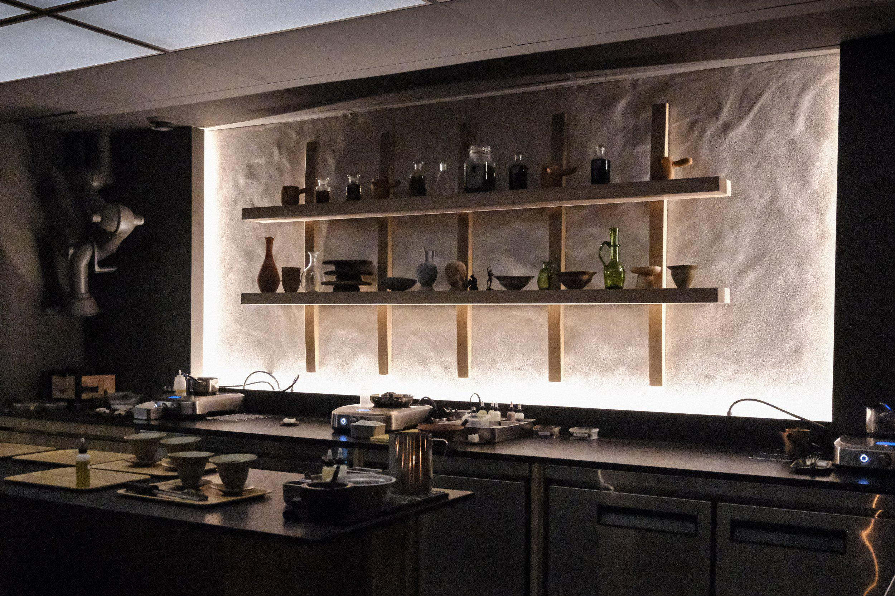

Ottawa Fine Dining
Toronto has one. Vancouver has one. Quebec has one, covering the whole province. Ottawa — the capital of the country — does not. The reason has surprisingly little to do with whether the food is good enough.
It's tempting to imagine Michelin's famously anonymous inspectors quietly touring the world, discovering deserving cities on culinary merit alone. That's roughly how it worked a generation ago. It is not how it works now, at least not in North America.
Today, a new Michelin Guide destination is typically the result of a negotiated, multi-year contract between Michelin and a local tourism board, funded with public or quasi-public money. The guide arrives once a city — or a province, or a state — agrees to pay for it.
The figures involved are not small, and they vary widely by market. Destination Vancouver signed a five-year agreement with Michelin ahead of the city's 2022 debut. Quebec's arrival in 2024 was underwritten in part by a $450,000 contribution from Canada Economic Development for Quebec Regions to the Quebec Tourism Industry Alliance, on top of a separate $100,000 investment from Destination Québec Cité. Elsewhere in North America, the numbers run even higher.
| Destination | Reported Investment |
|---|---|
| Boston | ~$1M (3-year deal) |
| Atlanta | ~$1M (3-year deal) |
| Texas (5 cities) | $2.7M (3-year deal) |
| American South (multi-state) | $1.65M/year |
| Minneapolis | $250,000/year |
| Quebec (government portion) | $450,000 (3-year) |
| Colorado | $300,000 |
| California (statewide) | $600,000 |
Virginia, notably, was asked for $360,000 to join Michelin's 2025 Southern expansion and declined — which is why Virginia doesn't have a guide either, despite a dining scene many would consider more than qualified.
This isn't a hypothetical for Ottawa. In November, Ottawa Tourism representatives met with a group of local restaurant owners and chefs to gauge interest in a possible Michelin bid — reportedly framed internally as a "Michelin readiness" conversation. Ottawa Tourism's director of public affairs, Jérôme Miousse, declined to discuss specifics of the meeting when asked, but confirmed the broader direction: "We share the culinary community's excitement about the long-term potential for broader international visibility for Ottawa's chefs, restaurants and neighbourhoods," he said, adding that Ottawa's Destination Stewardship Plan "identifies culinary tourism as a core strategic priority."
That stewardship plan — Ottawa Tourism's 10-year roadmap, developed with input from Resonance Consultancy — treats food and dining as one of several strategic focus areas for the city's tourism identity going forward. A Michelin bid would fit naturally inside that plan. Whether it fits inside its budget is a separate question entirely.
Every North American city that has landed a Michelin Guide in recent years has done so through exactly this kind of arrangement: a tourism board, a regional alliance, or a provincial government agreeing to fund the inspection and promotion costs over several years. None of it is technically a purchase of stars — Michelin maintains that its actual restaurant selections remain independently determined by its inspectors, regardless of who pays for their plane tickets — but there is no disputing that the guide simply does not arrive in a city that hasn't first arranged to pay for it.
Ottawa doesn't lack the restaurants. Chef-driven kitchens across the city are already producing the kind of tasting menus, technical execution, and singular culinary points of view that define Michelin-level dining elsewhere — Atelier's constantly evolving modernist tasting menu and Antheia's fermentation-driven approach are two obvious examples. What the city appears to lack, for now, is a finalized funding commitment on the scale of what Vancouver, Quebec, or any of the American cities above have already put forward.
Nothing, yet — at least not publicly. Ottawa Tourism has confirmed interest in principle but has not announced a funding deal, a timeline, or a partner organization to administer one. Based on how every other Canadian Michelin destination has arrived, the next real signal to watch for won't be a press release about restaurants. It will be a press release about money.
Toronto has Michelin stars. Vancouver has Michelin stars. Quebec has Michelin stars. Ottawa has the restaurants. What it doesn't yet have is a cheque with Michelin's name on it — and until that changes, neither will its status as a Guide destination.